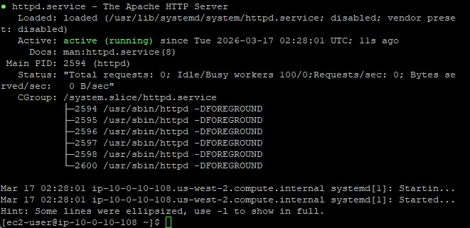
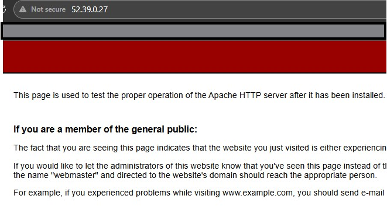
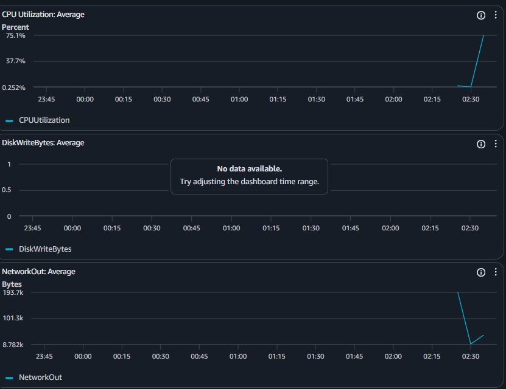

Amazon EC2
Hosted the Amazon Linux 2 instance and the Apache Web Server application.
Learn to interact with background system services like the Apache HTTP server, and utilize real-time monitoring tools such as CloudWatch to evaluate system health.
Hosted the Amazon Linux 2 instance and the Apache Web Server application.
Monitored EC2 infrastructural performance including CPU, memory, and disk reads.
Detailed record of each task performed during the lab.
sudo systemctl status httpd.service and observed
it was loaded but inactive (dead).sudo systemctl start httpd.service.sudo systemctl status httpd.service, revealing it
was now active and running.http://52.39.0.27/)
to confirm the Apache HTTP Server Test Page loaded successfully.sudo systemctl stop httpd.service.

httpd daemon operates in the background to serve HTTP requests. By default, Amazon Linux 2
does not automatically start this service upon install.
top command../stress.sh & top, spiking CPU
percentage used by the stress command.stress.sh script ran.
Commands utilized for system service management.
systemctlUsed to introspect and control the state of the systemd system and service manager.
status [service.name] : Prints the execution state of the specified targetstart [service.name] : Initiates the background daemonstop [service.name] : Halts the background daemon gracefullysystemctl.top) with GUI-based
metrics (CloudWatch).
Direct service management through systemctl allows granular control over which background
applications consume hardware quotas. Proper verification demands both checking internal daemon status
and confirming external accessibility (e.g., loading the web page).
By combining local terminal observability (top) with vast data aggregation platforms
like AWS CloudWatch, operators can accurately diagnose infrastructural limits and scale instances
proactively upon detecting consistent CPU spikes.